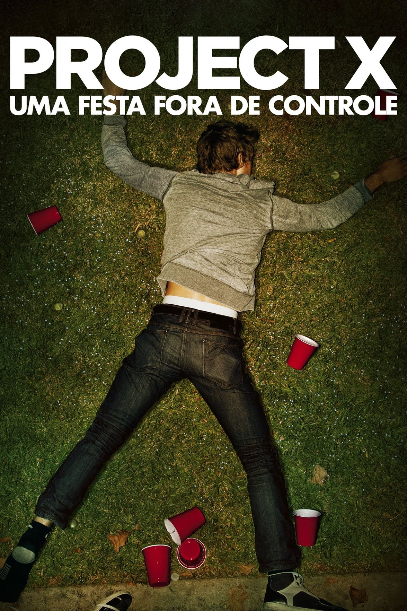
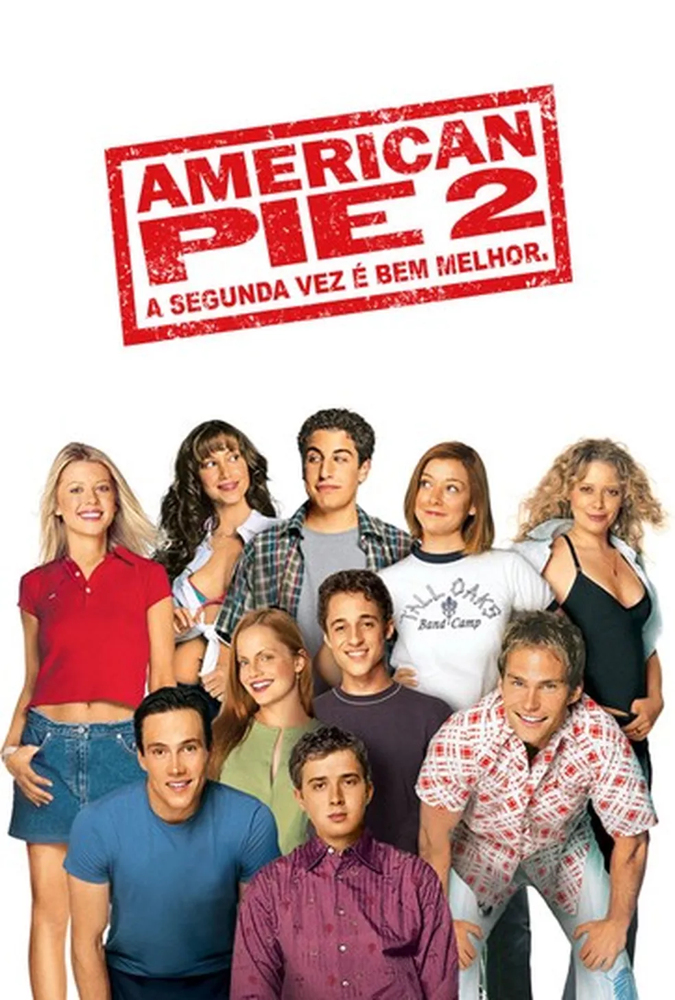

| Nome |
Capa |
Sinopse |
Ano de lançamento |
Indicação etária |
| Projeto X - Uma Festa Fora de Controle |
 |
Três amigos de colégio planejam uma festa inesquecível para entrar para a história na tentativa de ficarem famosos. A notícia se espalha rapidamente e tudo foge ao controle quando os imprevistos começam a acontecer. |
12/03/2012 |
Não recomendado para menos de 18 anos |
| Gente Grande |
 |
A morte do treinador de basquete de infância de velhos amigos reúne a turma no mesmo lugar que celebraram um campeonato anos atrás. Os amigos, acompanhados de suas esposas e filhos, descobrem que idade não significa o mesmo que maturidade. |
24/09/2010 |
Não recomendado para menores de 12 anos |
| American Pie 2 - A Segunda Vez é Bem Melhor |
 |
Jim Levenstein, Kevin Myers, Oz Ostreicher e Paul Finch são quatro amigos virgens às vésperas do baile de formatura. Em meio a suas tentativas frustradas de fazer sexo com as namoradas, olhar mulheres nuas na internet e até mesmo atacar uma torta recém-saída do forno, os rapazes fazem um pacto e prometem deixar a virgindade para trás antes do baile de formatura. Agora eles têm 24 horas para cumprir esse acordo. |
29/10/1999 |
Não recomendado para menores de 16 anos |